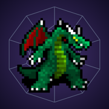

Support
Get help
Found a bug, lost progress, or have a question? Email support@simons.gg with what happened, your device, and your iOS version. A screenshot helps.
Common questions
Can I move my save from the web version?
Yes. On the web, open Settings and choose Export, then in the app go to Settings → Import and tap Paste. It works the other way too: in the app, tap Copy export string and import it on the web.
How do I remove the ads?
Leave any tip in Settings → Support the game. The ads turn off for good.
I tipped on another device. How do I get rid of the ads here?
In Settings → Support the game, tap Restore purchases while signed in to the same Apple Account.
Does the game keep going while the app is closed?
Yes, for up to 12 hours. When you come back, the app shows what you gained.